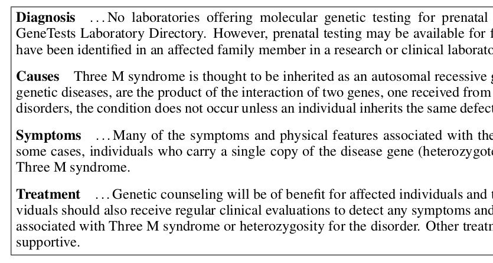
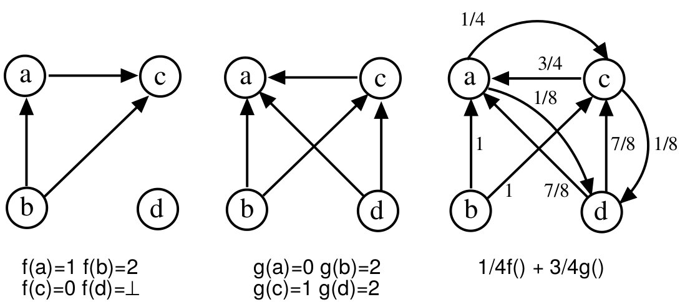
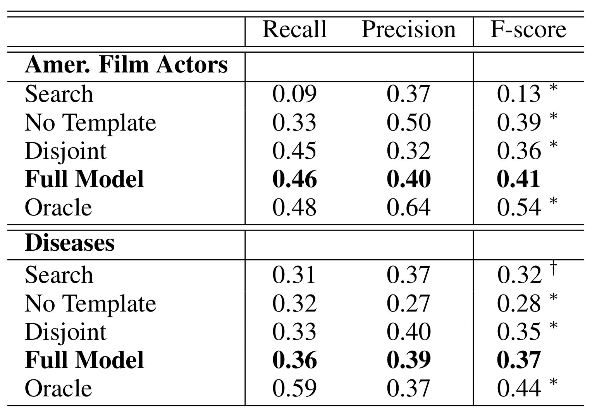
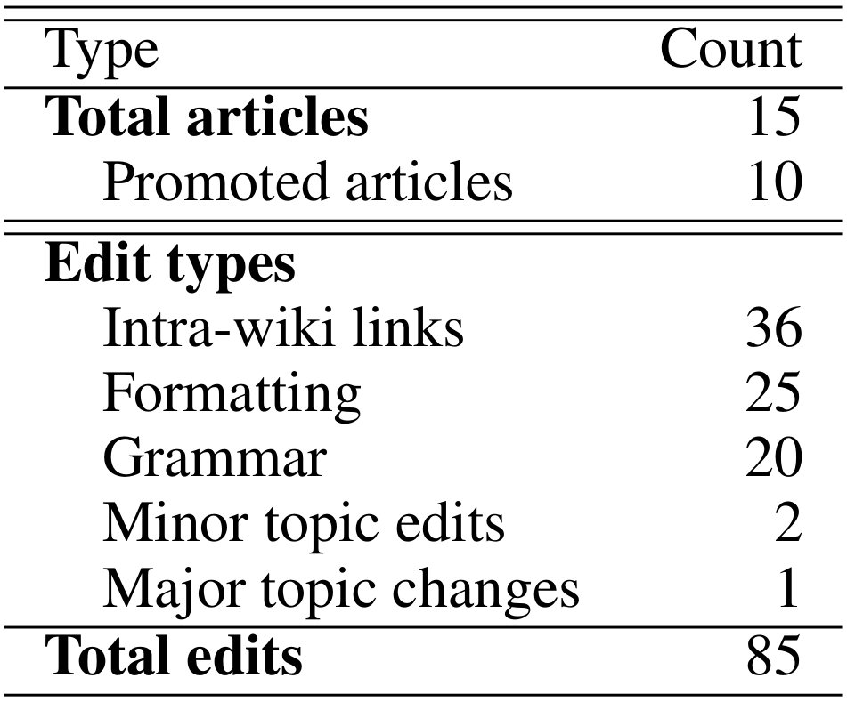

Automatically Generating Wikipedia Artciles: A Structure-Aware Approach (Sauper+, 2009)
repo
Goal
タイトルを入れると完全なWikipedia記事を生成する:
"3-M Syndrome" \(\mapsto\) complete article for Wikipedia
感想
- "template-based" とあったから読んでみた
- 思ってたのと違った
Overview
- entity の複数段落の要約 (overview)
- 原文 (段落) を
Yahoo! からたくさん拾ってきて並べる
+ content planning
- content に最適な文章を
- perceptron ranking algorithm で学習
- 整数線形計画法で選択
Content Planning
"Diseases" の content planning の例 (Figure 1):

template = topicの列:
\[\text{[Diagnosis, Causes, Symptoms, Treatment]}\]
生成物
生成物
記事のフレーズでググるとまんまの文章が別なページから引っかかる (拾ってきてる)
生成したい文章に必要な文はネットのどこかにあると仮定する. ただし、
- 複数のページに散らばっている
- ノイズな文も含まれうる
だから content planning が必要.
Method Overview
- 前処理
- 同じドメインの事例からテンプレート (トピックの列) の学習
- Search: 原文を集める
- Selection Model: 原文を選ぶ
- 選んだのを組み合わせる
Method::前処理::訓練事例
訓練データとする文章をネットから集める
- 生成したい記事と近いドメインのもの
- 実験では "Diseases" というドメインの他のWikipedia記事を用いた
\[\mathcal{D} = d_1, d_2 ~..~ d_n\] 文章 \(d_i\) は複数段落 \(s\) (<p>) からなり、段落には見出し \(h\) (<h*>) がついてる. \[d_i = \left( h_i^j, s_i^j \right)_{j=1 .. m_i}\]
事前処理::テンプレート学習 (Section 3.1)
見出しの列
- \(h_1^1 \rightarrow h_1^2 \rightarrow \ldots \rightarrow h_1^m\)
- \(h_2^1 \rightarrow h_2^2 \rightarrow \ldots \rightarrow h_2^m\)
- \(~~~~~~~~~~~\vdots\)
というのを template (topic列) だと見なして、 これを学習したい.
事前処理::テンプレート学習 (Section 3.1)
全見出し \(\{ h_i^j | i, j \}\) をクラスタリング \((t_1, t_2 .. t_k .. )\) して、 一つのクラスタ (多重集合) を topic とする.
- \(t_1 \rightarrow t_3 \rightarrow \ldots \rightarrow t_m\)
- \(t_2 \rightarrow t_3 \rightarrow \ldots \rightarrow t_{m'}\)
- \(~~~~~~~~~~~\vdots\)
みたいな列ができる.
- この列の長さ\(k\) (平均長) の majority-order を計算して (majority ordering algorithm [Cohen+, 98])、 template とする.
- クラスタ \(t_j\) の要素の最頻の見出し \(h\) をクラスタの見だしとして用いる.
事前処理 (誰か読んで)
- Repeated Bisectioning Algorithm [Zhao+, 05]
- 文章同士 \((s_i, s_j)\) のコサイン類似度を距離とした階層クラスタリング
- Majority Ordering Algorithm [Cohen+, 98]

事前処理::Search: 作ったテンプレート毎に excerpts (抜粋) を拾う (Section 3.1)
トピック \(t_j\) 毎に、できるだけたくさん excerpts を拾う
- "記事タイトル (entity) + 見出し \(h\) (\(h \in t\))" で
Yahoo! でググる
- e.g.
"3-M Syndrome"+diagnosis
- 上位10ページ採用
- 見出しと段落のペアを一つの excerpts として抽出
平均で 6 excerpts/topic 取れた
ここまで
ドメイン (e.g. "Diseases") に対して、 テンプレート \(t_1 ... t_k\). トピックごとに候補となる抜粋
- \(t_1\): \(e_{11}, e_{12} ~...~ e_{1r_1}\)
- \(t_2\): \(e_{21}, e_{22} ~...~ e_{2r_2}\)
- \(~~~~~\vdots\)
- \(t_k\): \(e_{k1}, e_{k2} ~...~ e_{kr_k}\)
抜粋 を一つずつ選択していくことで、 最終的な記事を生成する. ただし、
- coverage and redundancy のバランス
- ノイズを上手く避ける必要
Selection Model (Section 3.2.1)
候補 excerpts から一つずつを選択するモデル
- 入力
- 記事タイトル
- トピックの列 \((t_1, \ldots, t_k)\)
- トピック \(t_j\) に対して候補 \((e_j^k)_{k=1..r}\)
- パラメータ
- 素性 \(\phi : e \mapsto \phi(e) \in \mathbb{R}^n\) (天から与えられる)
- \(t_j\) に対応する重み \(w_j \in \mathbb{R}^n\) (学習する)
推定と学習
- \(w_j\) の学習: perceptron ranking algorithm
- 推定: 整数線形計画法 (ILP)
推定::Ranking
トピック \(t_j\) に対して、excerpt \(e\) のスコアを \[score(e) = \phi(e) \cdot w_j\] で与える. 候補 \((e_1, e_2, \ldots, e_r)\) を、この score の高い順で並び替える. \[Rank(e_1 ~..~ e_r; w_j) = (e_1 ~..~ e_r)\] (\(e_\ell\) は \(\ell\) 番目に良い).
推定::最適化
ランキングで並び替えした後
- \(t_1\): \(e_{11}, e_{12} ~...~ e_{1r_1}\)
- \(t_2\): \(e_{21}, e_{22} ~...~ e_{2r_2}\)
- \(~~~~~\vdots\)
- \(t_k\): \(e_{k1}, e_{k2} ~...~ e_{kr_k}\)
\[\min \sum_j \sum_\ell \ell \cdot x_{j\ell}\]
インディケータ \(x_{j\ell}\) は \(e_{j\ell}\) を選択するとき \(1\)、さもなくば \(0\).
制約 (ちょうど一つだけ選択すること): \[\sum_\ell x_{j\ell} = 1 ~ \forall j\]
推定::最適化::Redundancy Constraints
内容の冗長性をできるだけ取り除く為の制約: \[(x_{j\ell} + x_{j' \ell'}) \cdot sim(e_{j\ell}, e_{j' \ell'}) \leq 1\] を加える.
ここで、 \(sim\) は文章同士の cos 類似度.
推定::最適化::Solving the ILP
lp_solve は厳密解を与える (NP-hard)- 近似アルゴリズム: knapsack problem [McDonald, 07]
\(w_j\) の学習
perceptron ranking algorithm に基づく.
Perceptron Ranking Algorithm [Collins, 02] (蛇足)
- Max-Ent によるPOSタグ付け
- 最上位のものを出力する代わりに
- 上位20を取って re-rank していくビームサーチ
- 複数の候補から一番良いものを学習する
The perceptron training for ranking
- 入力
- 答え \(x_1\), 他の候補 \(x_2, x_3 ~..~ x_k\)
- 素性 \(\phi: x \mapsto \phi(x) \in \mathbb{R}^s\)
- スコア \(score(x,w) = w \cdot \phi(x)\)
- 初期化
- \(w^0 = 0 \in \mathbb{R}^s\)
- For \(i=1,2 ~..~ n\)
- \(j = \text{argmax}_j ~ score(x_j, w^{i-1})\)
- If \(j=1\)
- Then \(w^i = w^{i-1}\)
- Else \(w^i = w^{i-1} + \phi(x_1) - \phi(x_j)\)
Update
\(score(x_1, w) < score(x_j, w) (j\ne 1)\) のとき (Else節)、 \[score(x_1, w) - score(x_j, w) = w \cdot (\phi(x_1) - \phi(x_j))\] を大きくすればよい.
- Else \(w^i = w^{i-1} + \phi(x_1) - \phi(x_j)\)
voted perceptron (もっと蛇足)
学習の経過で作られた \(w^1, w^2 ~..~ w^n\) を全て用いる.
- 入力
- \(x_1, x_2 ~..~ x_k\)
- 同じ素性 \(\phi: x \mapsto \phi(x)\)
- 初期化
- 長さ \(n\) の配列
V[] = [0, 0, .. 0]
- For \(i=1,2,..n\)
- \(w^i\) で score が最上位の \(j = \text{argmax}_j score(x_j, w^i)\)
V[i] += 1
- 出力 \(x_j\) where \(j = \text{argmax}_j V[j]\)
学習::Ranking Perceptron
テンプレートを作る元文章からゴールドデータ \(s_1, s_2 ~..~ s_k\) を正解として用いる.
- \(t_1\): \(s_1\); \(e_{11}, e_{12} ~..~ e_{1r_1}\)
- \(t_2\): \(s_2\); \(e_{21}, e_{22} ~..~ e_{2r_2}\)
- \(~~~~~\vdots\)
- \(t_k\): \(s_k\); \(e_{k1}, e_{k2} ~..~ e_{kr_k}\)
- Rank with \(w_j \mapsto (e_{j1} ~..~ e_{jr}) ~ \forall j\)
- Optimize as a ILP \(x_j = Opt(e_{j1} ~..~ e_{jr}) ~ \forall j\)
- If \(sim(s_j, x_j) \geq 0.8\)
- Then \(w_j\) を更新しない
- Else \(w_j = w_j + \phi(s_j) - \phi(x_j)\)
評価
- ROUGE-1
- テストデータ (Wikipedia記事として既にあるもの) を訓練データ (Wikipedia記事)+Yahoo!(該当記事を参照しない) で生成してROUGEで比較
- REACTIONS
- 実際にWikipediaに投稿してみんなの反応を見る
データ
- ドメイン:
- American Film Actors: 2150 articles in Wikipedia
- Diseases: 523
- 各ドメインの90% の文章を訓練とする.
- 残り10%をテストとする
- 平均 4 topic (段落)
- Search 手続き (Yahoo!) 中ではテストデータ自体を参照しないようにする
Baselines
- Search
- パーセプトロンでランキングせずに、検索結果で引っかかった順にランク付けを行う
- 1ページから\(k\)段落拾ってきた場合には、それをそのまま候補として用いる
- 大抵、ページの一番初めの段落は comprehensive overview であるので summary としては優秀
- NoTemplate
- テンプレート (トピック列) を気にしない
- Search では、記事のタイトルだけで検索する (full model では記事タイトル+見出し)
- 文の組合せ方は既存手法に従う [Zhou 04; Biadsy 08]
- Disjoint
- ILPを行わない
- ランキングの後、各トピックから1位のものだけを選択して組み合わせる
- Oracle
- 候補からテストデータとコサイン類似度が高いものを選択する
- 生成すべきテストデータを参照する上にROUGEで評価するので
- ランキングアルゴリズムに関する精度の上限を与えると考える
ROUGE-1 結果 (Table 3)

- Oracle は上限
- No Template は一つのトピックに集中してしまう
- FullModel と Disjoint との差がランキングの良さ
- Search はまちまち. 良い記事を引けば良い
REACTIONS
15の記事を投稿、5-11ヶ月放置
- 10 promoted from stubs to regular entries
- 全ての記事が人手で編集された
- 削除がなされた記事は無い
- 記事中の三箇所 (1 section + 2 smaller pieces) が削除された

- The most common changes were small edits to formatting and introduction of links to other Wikipedia articles